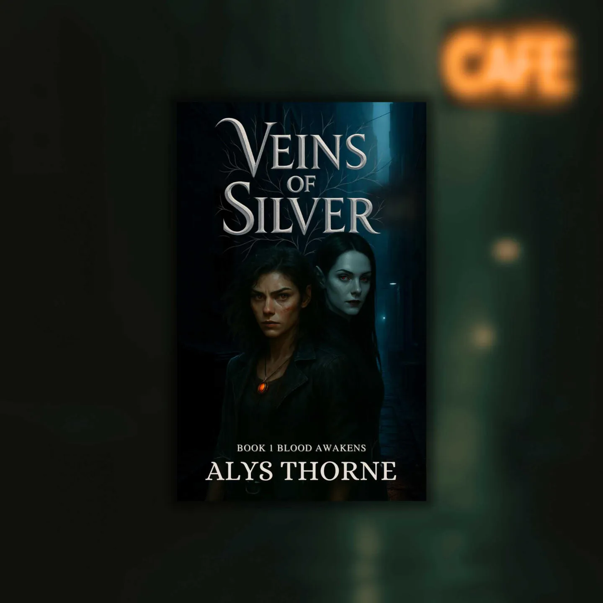
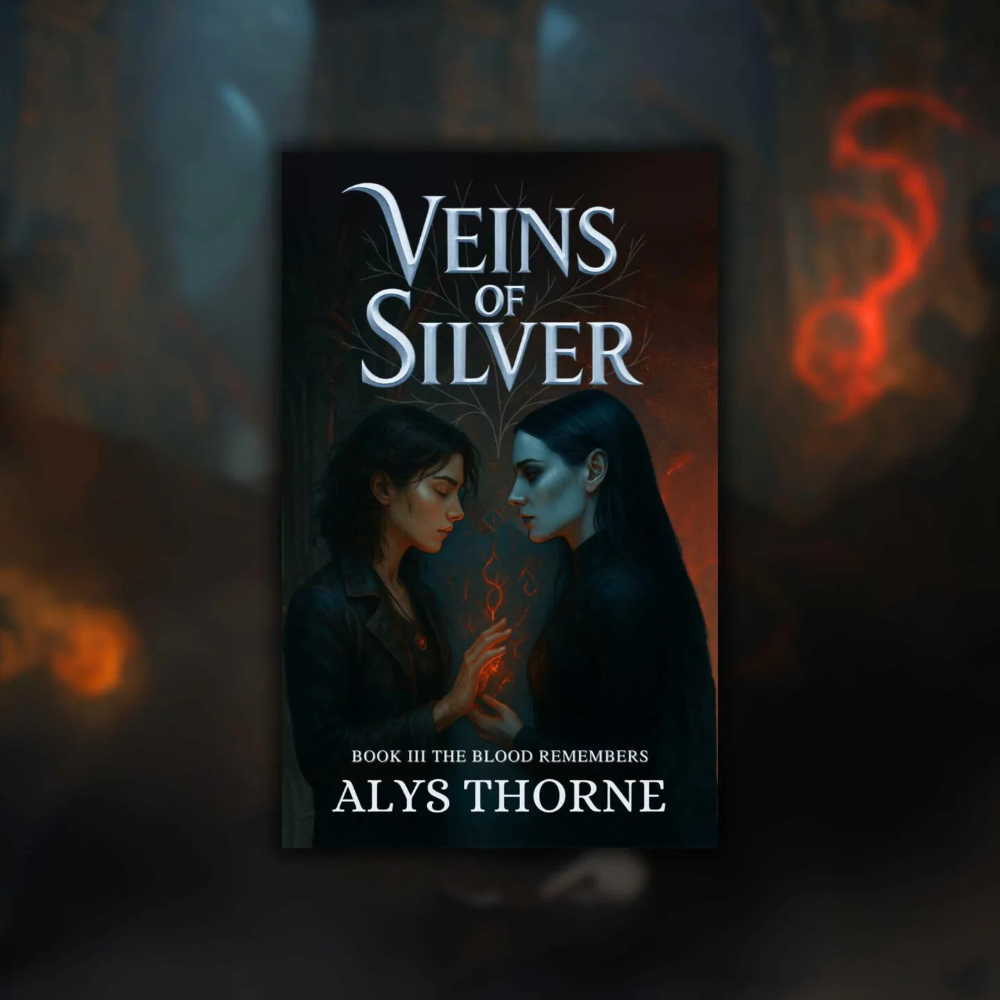

Blood Awakens
Veins of Silver · I

Book I
“You shouldn't exist.” But Isolde can't look away.
Tessa Cole was supposed to be ordinary — until a violent encounter reveals her blood is anything but. Saved by Isolde, a rogue vampire with unreadable eyes and deadly grace, she's thrust into a world of secrets, shadows, and ancient power. As danger circles and her abilities awaken, the connection between them burns hotter than it should. But in a city where love between enemies is forbidden, desire may be her greatest threat.
Step into the beginning of the saga
Read Book I
Book details
Kindle · Paperback · Hardcover · Kindle Unlimited
Shadows Unbound
Veins of Silver · II

Book II
She should be her enemy. Instead, she's her anchor.
On the run and hunted, Tessa and Isolde find shelter in the fractured underworld of the city — where danger lurks behind every promise and their growing bond could shatter everything. The deeper they fall into each other, the more the world pushes back. As bloodlines rise and magic stirs, love becomes not just a risk, but a rebellion.
The next chapter of their dark, dangerous romance
Read Book II
Book details
Kindle · Paperback · Hardcover · Kindle Unlimited
The Blood Remembers
Veins of Silver · III

Book III
Bound by blood. Kept alive by love.
The storm is here. With the city on the brink of war and the Hollow stirring beneath their feet, Tessa and Isolde must fight to break the curse that defined their bloodlines. But victory will demand sacrifice — and their love may not survive the fire. In a world where memory is weapon and love is defiance, two hearts may not be enough to change fate.
The final battle begins
Read Book III
Book details
Kindle · Paperback · Hardcover · Kindle Unlimited